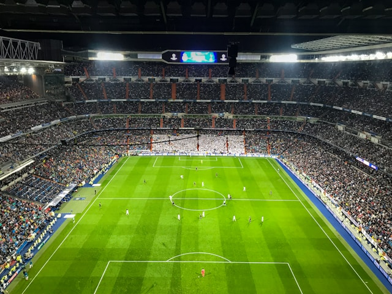
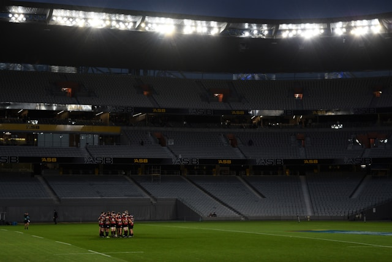
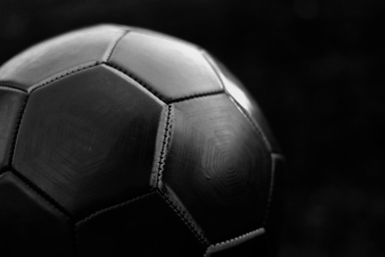
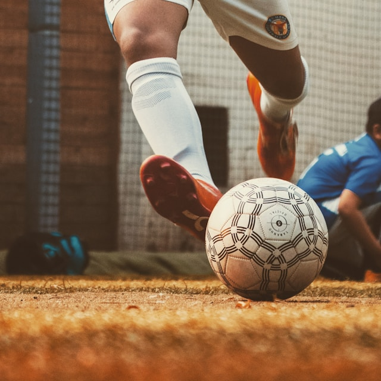
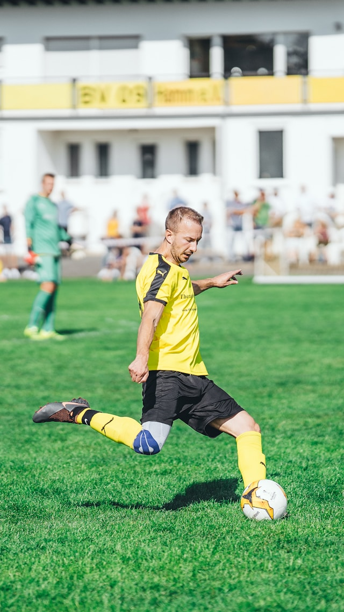

|  |
Spor tutkunlarının heyecanla beklediği an nihayet yaklaşıyor! Büyük final maçı için geri sayım başladı ve spor dünyasının tüm gözleri bu olaya çevrildi. Taraftarlar, sporcular, teknik ekipler ve medya, bu unutulmaz an için sabırsızlanıyor.Büyük final maçı, sadece bir spor etkinliği değil, aynı zamanda bir şölen niteliği taşıyor. Sporun güzellikleri, rekabetin ateşi ve heyecanın dorukları, final maçında bir araya geliyor ve izleyicilere unutulmaz anlar yaşatıyor. Binlerce taraftarın stadyumu doldurmasıyla başlayacak olan maç, milyonlarca izleyiciyi ekran başına kilitleyecek.Final maçı, sporun ruhunu ve karakterini en iyi şekilde yansıtan bir etkinlik olacak. İki rakip takımın sahaya çıkmasıyla birlikte, adrenalin yüksek seviyelere çıkacak ve mücadele hız kazanacak.
|
Sonuç olarak, spor dünyasında heyecan dorukta ve büyük final maçı için geri sayım başladı. Bu unutulmaz etkinlik, sporun ruhunu ve karakterini en iyi şekilde yansıtacak ve izleyicilere unutulmaz anlar yaşatacak. Taraftarlar, sporcular ve medya, bu olayı sabırsızlıkla bekliyor ve bu büyük gün için hazırlıklarını tamamlıyor.
   